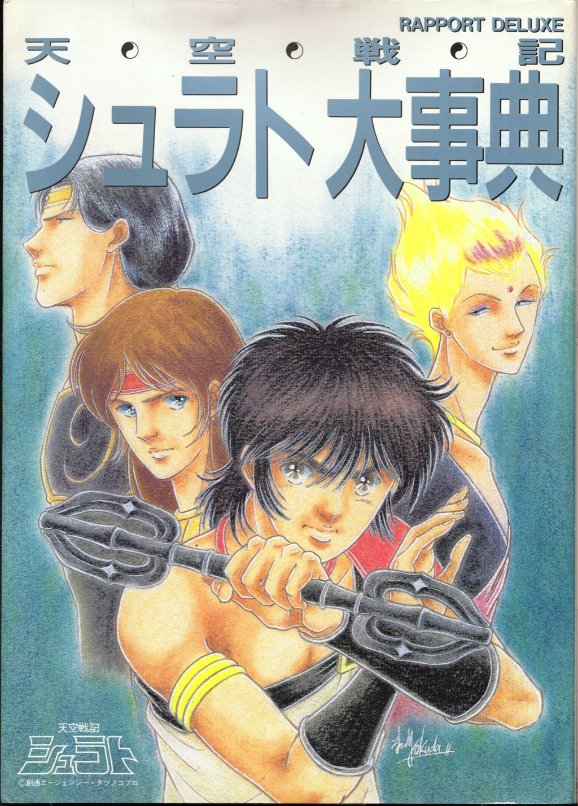
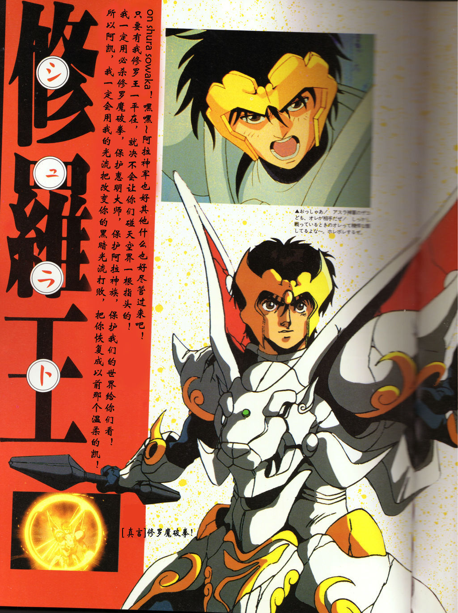
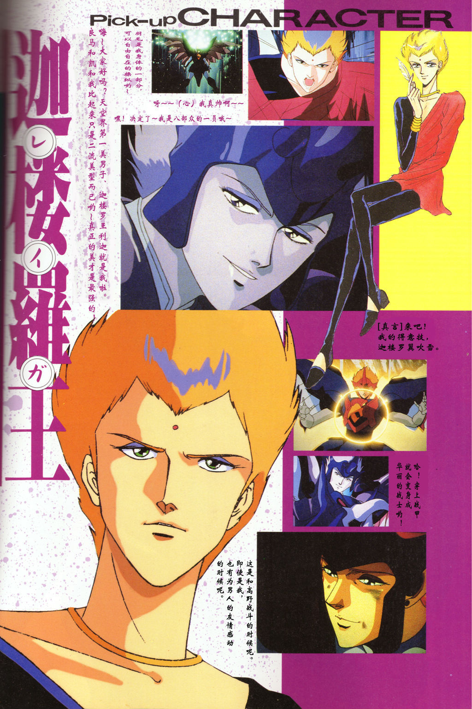
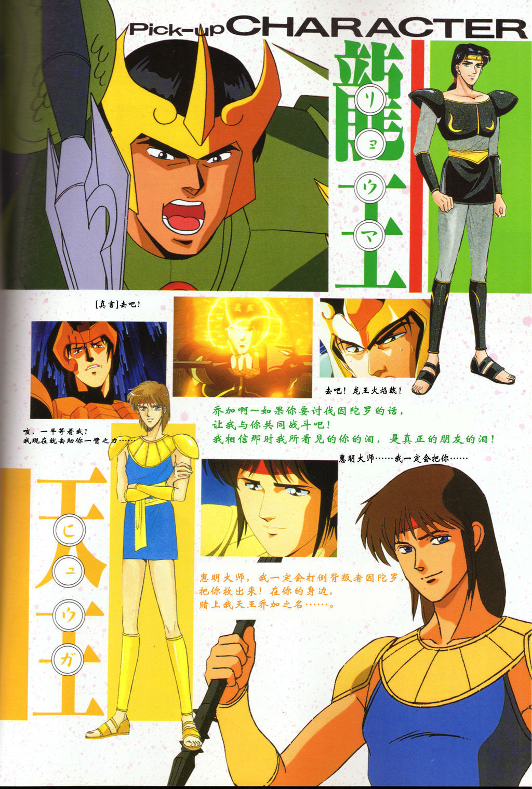
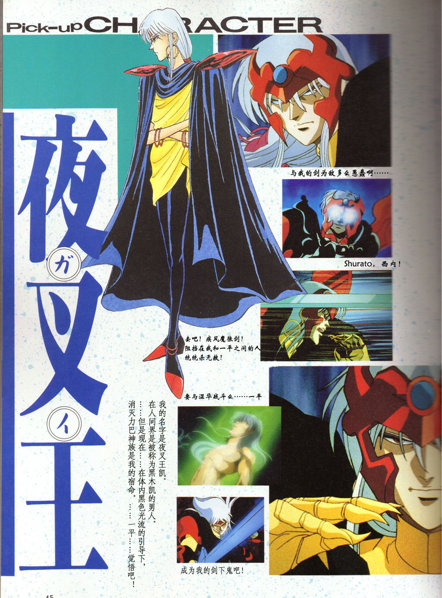
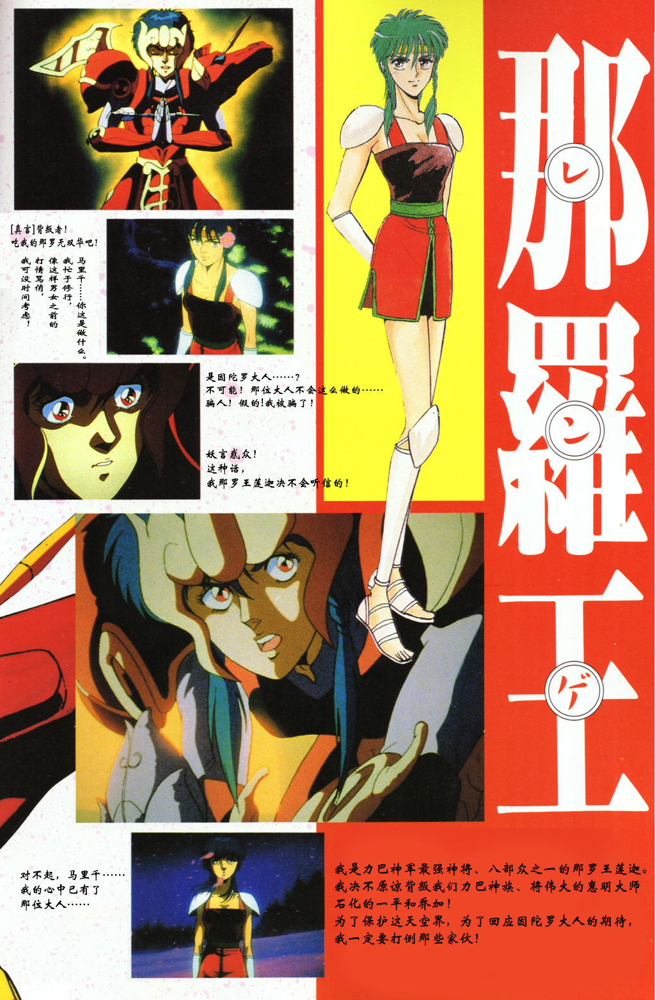
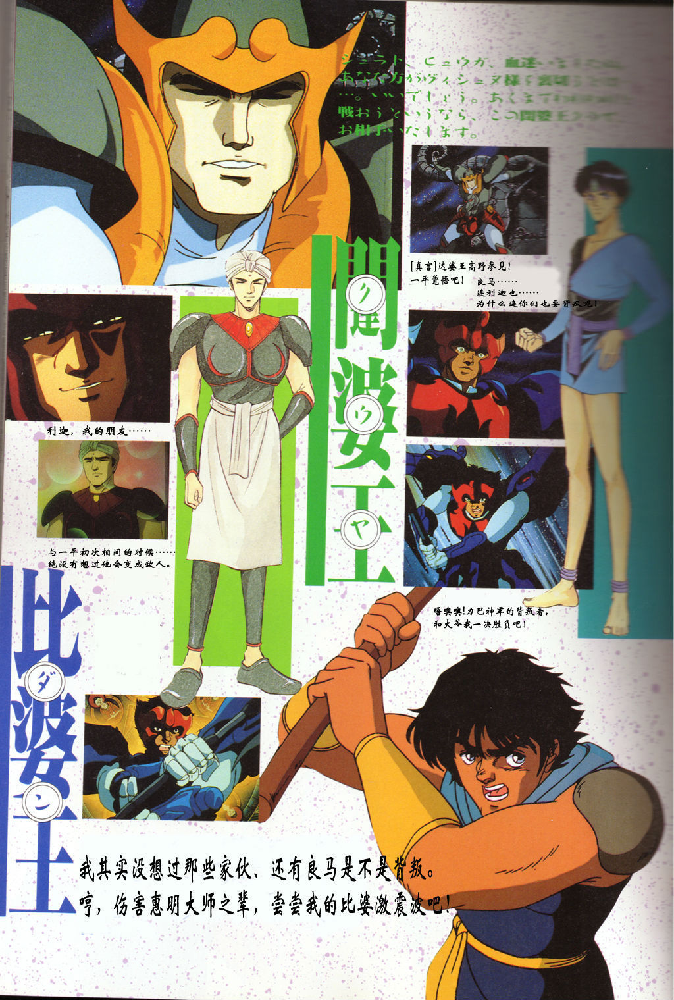
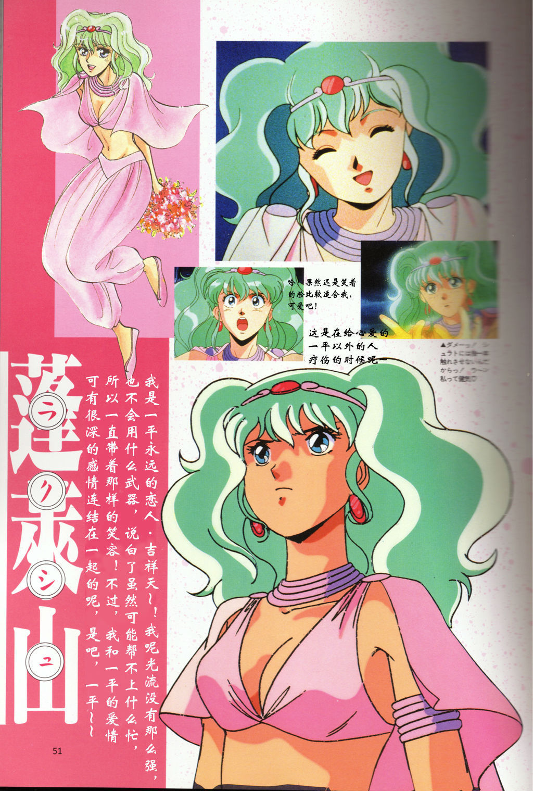

天空战记 · 八部众真实人物图对照

1 修罗王·日高秋夜 / 狮子 / 主角

2 夜叉王·黑木凯 / 虎 / 挚友→敌

3 天帝·因陀罗 / 剑齿虎 / 八部众之首

4 龙王·婆娑 / 青龙 / 因陀罗至交

5 远达罗王·力迦 / 孔雀 / 国家守护神

6 那罗王·丽伽 / 独角兽 / 唯一女性

7 闭尸王·高罗 / 水牛 / 死间

8 比沙王·阿达 / 钟兽 / 性如烈火
图片来源：新浪图集《天空战记大事典（中文版）》八部众资料
https://k.sina.com.cn/article_5979310491_p16465099b027012gxn.html